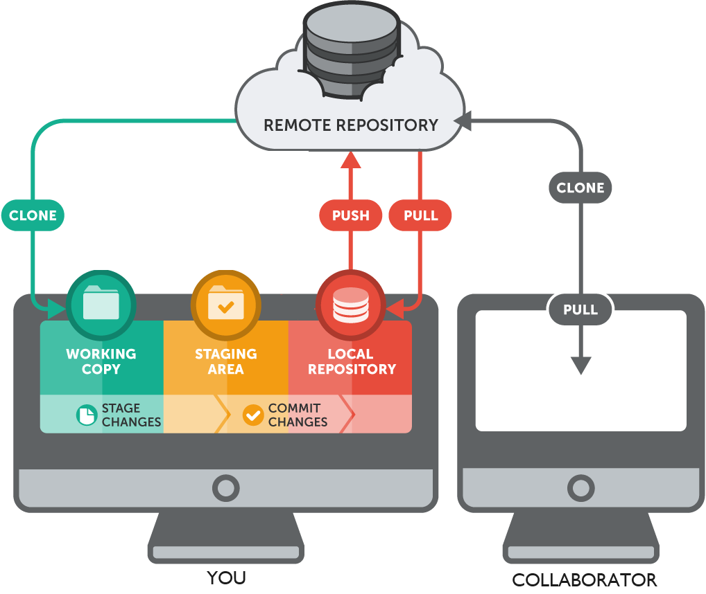
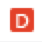
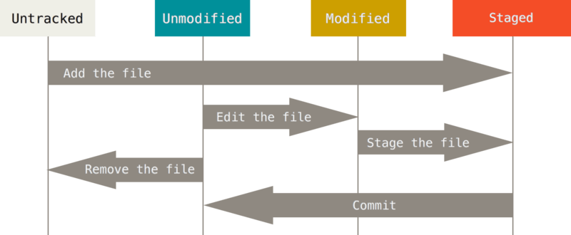
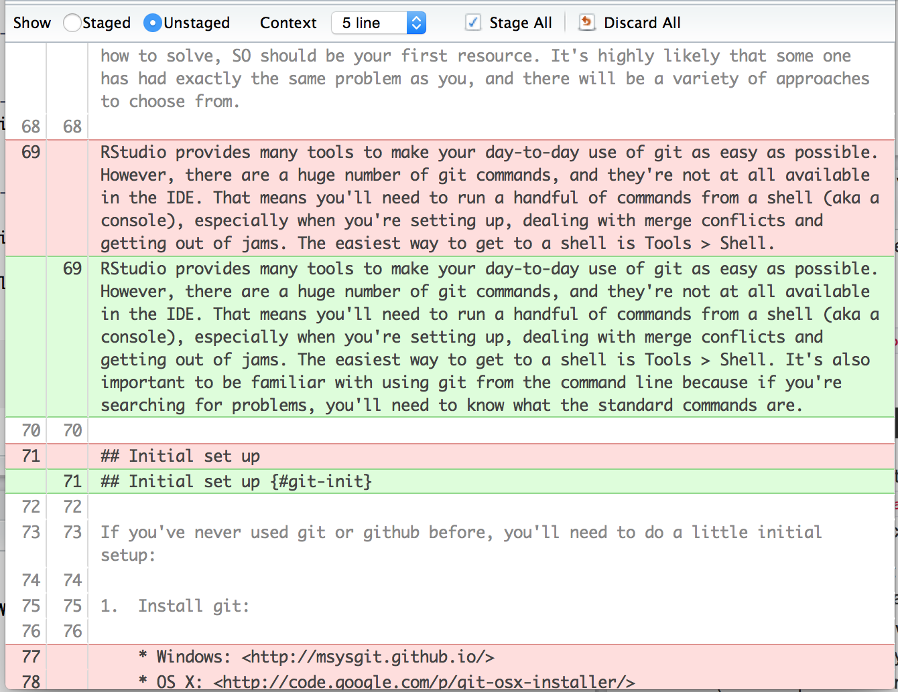

1 Git Basics and First Data Contact
1.1 Learning Objectives
By the end of this session, you will be able to:
✅ Create a GitHub account and connect it to RStudio
✅ Clone a repository from GitHub
✅ Make changes to files in your project
✅ Commit changes with descriptive messages
✅ Push commits to GitHub
✅ View your commit history on GitHub
1.1.1 What we are NOT covering today:
Branching (we’ll learn this later)
Pull requests and collaboration (we’ll learn this later)
Merge conflicts (we’ll learn this later)
1.2 Why Version Control Matters for Scientists
Version control is like a lab notebook for your computational work. It:
Tracks every change you make to your analysis
Prevents disasters - you can always go back to a working version
Creates a backup - your work is stored on GitHub, not just your laptop
Makes collaboration possible - multiple people can work on the same project
Supports reproducibility - others can see exactly what you did
Think of Git as saving “checkpoints” in your analysis. Each checkpoint (called a commit) is a snapshot of your project at a specific moment.
1.3 Part 1: Let’s Git it started (Setup)
1.3.1 Install Required Packages
1.3.2 Create a Github Account
Unless you are using Posit Cloud (which has git pre-installed) you will need to make sure you have Installed Git on your machine
Go to github.com
Click “Sign up”
Use your university email address
Choose a professional username (you’ll share this with collaborators and on your CV)
Created a free Github Account - go to github.com
Your GitHub username will be visible on your profile and repositories. Choose something professional like firstname-lastname or firstinitiallastname rather than something like coolcoder123.
1.4 Part 2: Create and Clone Your First Repository
1.4.1 What is a Repository?
A repository (or “repo”) is a project folder that Git tracks. It contains: - Your data files - Your scripts - Your documentation - A hidden .git folder that tracks all changes
1.4.2 Create a Repository on GitHub
We’re doing “GitHub first” - creating the repository online, then bringing it into RStudio.
- Go to github.com and log in
- Click the “+” button in the top right corner
- Select “New repository”
Fill in the details:
| Field | What to Enter |
|---|---|
| Repository name | data-science-week1 |
| Description | “Week 1 assignment: Git basics and data inspection” |
| Public/Private | Public (for this course) |
| Initialize with README | ❌ Leave unchecked |
| Add .gitignore | ❌ Leave unchecked |
| Choose a license | ❌ Leave unchecked |
- Click “Create repository”
STOP! Before leaving this page:
- Copy the repository URL - it looks like:
https://github.com/your-username/data-science-week1.gitMake sure you copy the HTTPS URL (starts with https://), not the SSH URL (starts with git@).
1.4.3 Clone the Repository into RStudio
“Cloning” means downloading a copy of the repository to your computer.
In RStudio:
- File → New Project
- Select “Version Control”
- Select “Git”
- Paste your repository URL into “Repository URL”
- Project directory name will auto-fill
- Browse to choose where to save it on your computer
- Click “Create Project”
RStudio will: - Download the repository - Create an RStudio Project - Connect everything to GitHub
You should now see a “Git” tab in your RStudio pane (usually top-right).
If you don’t see the Git tab, something went wrong with the connection. Ask for help before proceeding.
1.4.4 Connect RStudio to Github
Now we need to introduce RStudio and GitHub to each other.
Replace “Your Name” and the email with your actual information.
GitHub requires a special password called a PAT to connect RStudio to your account.
This will open GitHub in your browser.
You’ll see a page where you can create a token
Scroll down and click “Generate token”
COPY THE TOKEN IMMEDIATELY - you’ll only see it once!
Don’t close the window yet - keep it open
The token looks like a long string of random characters: ghp_xxxxxxxxxxxxxxxxxxxx
You will not be able to see this token again. If you lose it, you’ll need to create a new one.
When prompted:
Paste your PAT (the long string you copied)
Press Enter
Step 4: Check everything works
If you see a message saying everything is configured correctly, you’re ready!
If working on Posit Cloud, you may need to refresh your PAT more frequently.
1.5 Write your PAT somewhere safe and use this at the password prompt
You MUST NOT include this in any file format that will be pushed to Github - this will post your password online
Its a security risk
Github might prevent the push to prevent this.
If stored in a file, add this file name to your
.gitignorefile
1.6 Change R environ
Configure your RStudio environment to store the PAT there. This is marginally less secure that using a credentials manager.
- We will store your PAT in the
.Renvironfile
Add a line like this, but substitute your PAT:
Make sure this file ends in a newline!
Restart R for changes in
.Renvironto take effect.You now need to use R commands when making commits and pushes to Github
1.7 Part 3: Your First Git Workflow
Now we’ll practice the basic Git cycle:
Modify → Stage → Commit → Push
This is the workflow you’ll use hundreds of times throughout the course.

1.7.1 Create a Folder Structure
Git tracks files, not empty folders. Let’s create folders and files.
In your RStudio Files pane:
Example:
Git is a version control system that tracks changes to files.1.7.2 Understanding the Git Pane
Look at the Git tab in RStudio. You should see files listed with icons:
| Icon | Meaning |
|---|---|
| New file Git hasn’t seen before | |
| Modified file you’ve changed | |
 |
Deleted file |
You’ll see several files listed: - .gitignore - tells Git which files to ignore - data-science-week1.Rproj - your RStudio Project file - week1/ folder - notes.txt file
1.7.3 Stage Files
“Staging” means selecting which changes you want to include in your next commit.
In the Git Pane:
Check the box next to each file you want to commit
For now, select all files
The files move from “unstaged” to “staged” - they’re ready to commit.
You don’t always have to stage everything. Sometimes you’ll only want to commit changes to specific files. But for your first commit, stage everything.
1.7.4 Commit Changes
A commit is a snapshot of your project. Each commit needs a message explaining what changed.
In the Git Pane:
Click the “Commit” button in the Git pane
A new window opens showing your changes
In the “Commit message” box, write: > Initial commit: Created folder structure and notes
Click Commit
Good commit messages are:
Descriptive: “Added data inspection script” not “updated files”
Action-oriented: Start with a verb (Added, Fixed, Updated, Removed)
Concise: One line is usually enough
Present tense: “Add file” not “Added file”
Think of the commit message as completing this sentence: “If applied, this commit will…” [your message]
Examples:
✅ “Add initial data inspection notes”
✅ “Fix typo in species name standardization”
✅ “Remove duplicate observations from dataset”
❌ “stuff” (not descriptive)
❌ “asdfasdf” (meaningless)
❌ “fixed it” (what did you fix?)

1.7.5 Push changes
Your commit is saved locally on your computer. To send it to GitHub:
Click the “Push” button (green upward arrow) in the Git pane or commit window
-
You may be asked for credentials:
Username: Your GitHub username
Password: Use your PAT, not your GitHub password
Wait for the push to complete
-
Verify it worked:
Go to your repository on GitHub (refresh the page)
You should see your files and commit message!
1.7.6 Repeat the Workflow
Let’s repeat the cycle to build muscle memory.
Your Turn
Verify: Check GitHub - your new commit should appear in the commit history.
1.7.7 One More Cycle
Let’s repeat the cycle once more
Your Turn
Verify: Check GitHub - You should now see three commits in your repository history.
1.8 Part4: Working with Data
Now let’s work with the actual biological dataset you’ll be analysing.
PESTICIDE EFFECTS ON MOSQUITO EGG-LAYING BEHAVIOR
================================================
STUDY CONTEXT:
--------------
Testing effectiveness of pesticide-treated egg-laying traps for pest
management. Females exposed to treated traps show reduced reproduction
through two mechanisms:
1. BEHAVIORAL AVOIDANCE: Females detect pesticide and lay fewer eggs
2. DIRECT TOXICITY: Pesticide residues reduce egg viability/hatching
EXPERIMENTAL DESIGN:
-------------------
Study Period: May 1, 2023 - August 31, 2023
Sites: Three agricultural field sites
- Site A
- Site B
- Site C
Treatments (n=~37-38 per treatment):
- Control: No pesticide in traps
- Low_dose: 0.5% active ingredient
- Medium_dose: 1.0% active ingredient
- High_dose: 2.0% active ingredient
VARIABLES:
----------
female_id: Unique identifier for each female insect
- Type: Integer
- Should be unique unless repeated measures (weekly sampling)
treatment: Pesticide concentration in egg-laying trap
- Type: Categorical
- Levels: Control, Low_dose, Medium_dose, High_dose
age_days: Age of female at collection (days post-emergence as adult)
- Type: Integer
- Normal range: 20-90 days
- Younger females (<30 days) produce fewer eggs naturally
body_mass_mg: Female body mass in milligrams
- Type: Numeric (continuous)
- Normal range: 50-130 mg
- Varies by site
- Correlates with egg production capacity
eggs_laid: Total number of eggs laid by female
- Type: Integer (count)
- Expected dose-response:
* Control: 50-70 eggs (baseline)
* Low_dose: reduction
* Medium_dose: reduction (strong avoidance)
* High_dose: reduction (strong avoidance + physiological stress)
- Also affected by age, body mass, and site conditions
eggs_hatched: Number of eggs that successfully hatched
- Type: Integer (count)
collection_date: Date of data collection
- Type: Date
- Range: 2023-05-01 to 2023-08-31
collector: Person who collected data
- Type: Categorical
- Levels: Smith, Jones, Garcia
site: Field site location
- Type: Categorical
- Levels: Site_A, Site_B, Site_C
1.8.1 Download the Dataset
In RStudio, create a folder called
data/in your projectMove the downloaded file into
data/Rename it to
mosquito_egg_data.csv
Never commit large data files to Git unless they’re small (< 10MB) and essential. For this course, the datasets are small enough to commit. In real projects, you’d add large data files to .gitignore.
1.8.2 Initial Exploration Script
In RStudio, create a folder called
scripts/in your projectCreate a new file: File → New File → R Script
Save it as
scripts/initial_exploration.R
# Week 1: Initial Data Exploration ====
# Author: [Your Name]
# Date: [Today's Date]
# Load packages ====
library(tidyverse)
library(here)
library(naniar)
library(janitor)
library(skimr)
# Load data ====
mosquito_egg_raw <- read_csv(here("data", "mosquito_egg_data.csv"),
name_repair = janitor::make_clean_names)
# Basic overview ====
glimpse(mosquito_egg_raw)
summary(mosquito_egg_raw)
skim(mosquito_egg_raw)
# React table====
# view interactive table of data
view(mosquito_egg_raw)
# Counts by site and treatment====
mosquito_egg_raw |>
group_by(site, treatment) |>
summarise(n = n())
# Observations ====
# Your observations (add as comments below):
# - What biological system is this?
#
# - What's being measured?
#
# - How many observations?
#
# - Anything surprising?
#
# - Any obvious problems?
#You’ll need to install tidyverse and here first if you haven’t already.
Don’t put install.packages() in your script. Only run this in the console
Run and Annotate
1.8.2.1 Commit Your Exploration
Save your script
Stage both
mosquito_egg_data.csvandinitial_exploration.RCommit with message: Add dataset and initial exploration script
Push to GitHub
1.9 Part 5: Viewing Your Work on GitHub
Let’s explore what Git has tracked.
1.9.0.1 View Commit History
Go to your repository on GitHub
Click on “commits” (above the file list)
You should see all your commits with their messages
Click on any commit to see:
What files changed
Line-by-line differences (diff)
When it happened
Who made the change

The commit history is a complete record of your project’s evolution. This is why good commit messages matter - future you (or collaborators) can understand what happened when.
1.9.0.2 View File Changes
On GitHub, click on any file, then click “History” to see all commits that affected that file.
This is incredibly useful when you need to:
Find when a bug was introduced
See who changed something
Recover an old version
1.10 Common Git Issues and Solutions
Issue 1: “I don’t see the Git tab in RStudio”
Go to Tools → Project Options → Git/SVN
Make sure “Version control system” is set to “Git”
Restart RStudio
Issue 2: “Push failed - authentication error”
Regenerate your PAT again
Set this with
gitcreds_set()or store in .Renviron
Issue 3: “I made a commit but it’s not on GitHub”
You committed but didn’t push. Click the green “Push” arrow.
Issue 4: “I want to undo my last commit”
Don’t panic. Ask for help before trying to fix it - undoing commits requires commands we haven’t covered yet.
1.11 Key Git Concepts to Remember
| Term | Meaning |
|---|---|
| Repository | A project folder tracked by Git |
| Commit | A snapshot of your project at one moment |
| Stage | Select files to include in the next commit |
| Push | Upload local commits to GitHub |
| Pull | Download commits from GitHub (we’ll use this in Week 2) |
| Clone | Download a repository from GitHub to your computer |
1.12 Git Workflow Summary
Make changes to files
↓
Stage changes (check boxes)
↓
Commit with descriptive message
↓
Push to GitHub
↓
Repeat!1.13 Getting Help
If you get stuck:
Check the error message - Git errors are usually informative
Ask a neighbor - they might have just solved the same problem
Check the Happy Git with R guide
Ask in the course discussion forum
Come to office hours
Git has a learning curve, but you’ll use it hundreds of times this term. The investment pays off.
1.14 Reading
Happy Git - comprehensive guide
GitHub Guides - official GitHub tutorials
Git Cheat Sheet - quick reference
1.15 Checklist Before Leaving Today
If any box is unchecked, ask for help now!
See Chapter 2 for tasks to complete before our next workshop